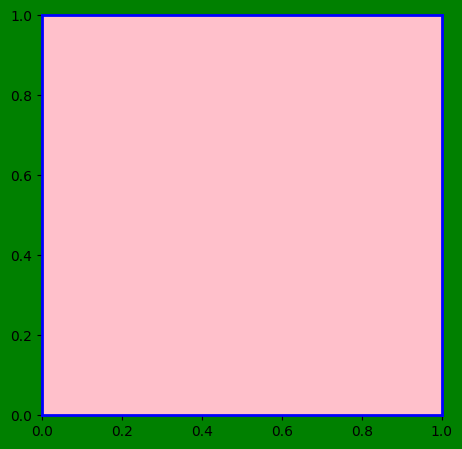
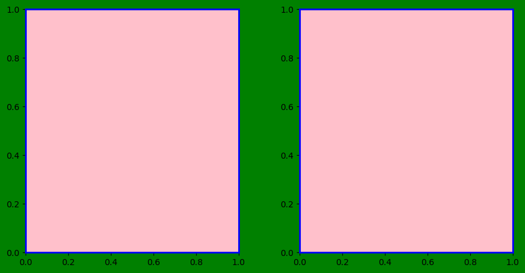
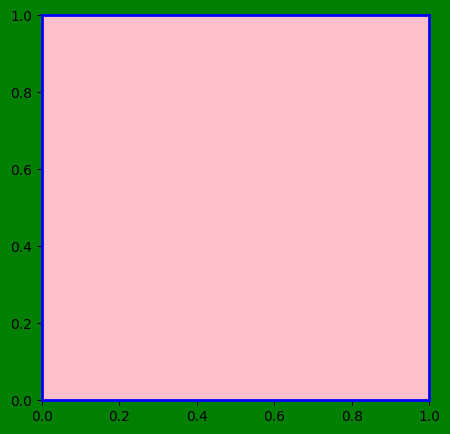
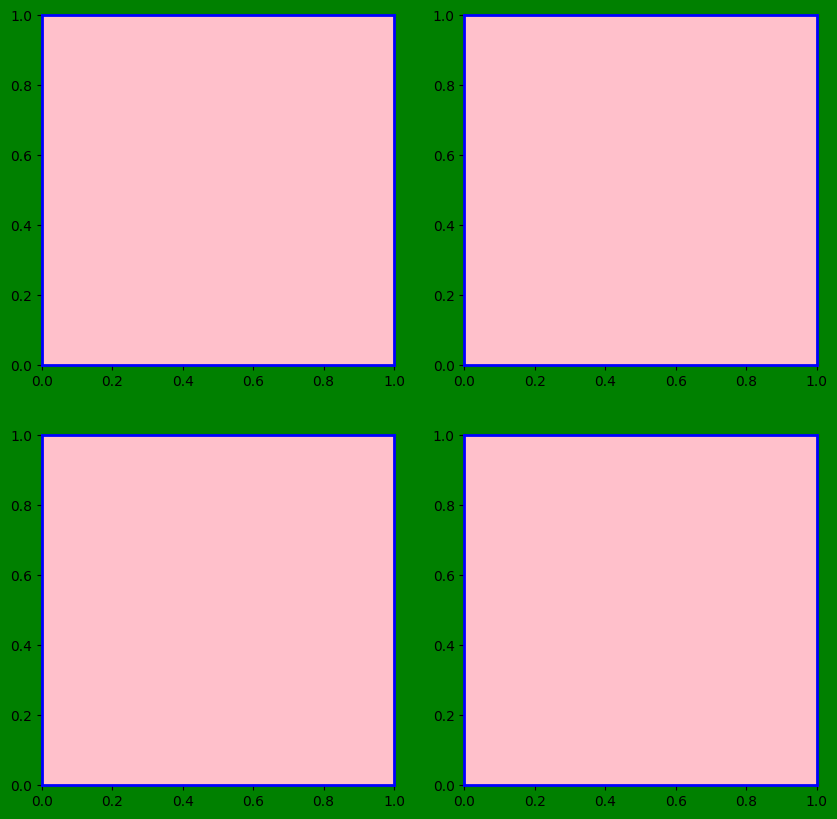
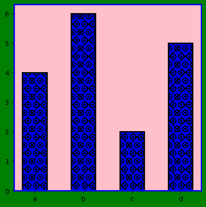

Note: you may need to restart the kernel to use updated packages.MatPlotLib Library
3 Figure and Axis







6 Bar Graph
Help on function bar in module matplotlib.pyplot:
bar(
x: 'float | ArrayLike',
height: 'float | ArrayLike',
width: 'float | ArrayLike' = 0.8,
bottom: 'float | ArrayLike | None' = None,
*,
align: "Literal['center', 'edge']" = 'center',
data=None,
**kwargs
) -> 'BarContainer'
Make a bar plot.
The bars are positioned at *x* with the given *align*\ment. Their
dimensions are given by *height* and *width*. The vertical baseline
is *bottom* (default 0).
Many parameters can take either a single value applying to all bars
or a sequence of values, one for each bar.
Parameters
----------
x : float or array-like
The x coordinates of the bars. See also *align* for the
alignment of the bars to the coordinates.
Bars are often used for categorical data, i.e. string labels below
the bars. You can provide a list of strings directly to *x*.
``bar(['A', 'B', 'C'], [1, 2, 3])`` is often a shorter and more
convenient notation compared to
``bar(range(3), [1, 2, 3], tick_label=['A', 'B', 'C'])``. They are
equivalent as long as the names are unique. The explicit *tick_label*
notation draws the names in the sequence given. However, when having
duplicate values in categorical *x* data, these values map to the same
numerical x coordinate, and hence the corresponding bars are drawn on
top of each other.
height : float or array-like
The height(s) of the bars.
Note that if *bottom* has units (e.g. datetime), *height* should be in
units that are a difference from the value of *bottom* (e.g. timedelta).
width : float or array-like, default: 0.8
The width(s) of the bars.
Note that if *x* has units (e.g. datetime), then *width* should be in
units that are a difference (e.g. timedelta) around the *x* values.
bottom : float or array-like, default: 0
The y coordinate(s) of the bottom side(s) of the bars.
Note that if *bottom* has units, then the y-axis will get a Locator and
Formatter appropriate for the units (e.g. dates, or categorical).
align : {'center', 'edge'}, default: 'center'
Alignment of the bars to the *x* coordinates:
- 'center': Center the base on the *x* positions.
- 'edge': Align the left edges of the bars with the *x* positions.
To align the bars on the right edge pass a negative *width* and
``align='edge'``.
Returns
-------
`.BarContainer`
Container with all the bars and optionally errorbars.
Other Parameters
----------------
color : :mpltype:`color` or list of :mpltype:`color`, optional
The colors of the bar faces. This is an alias for *facecolor*.
If both are given, *facecolor* takes precedence.
facecolor : :mpltype:`color` or list of :mpltype:`color`, optional
The colors of the bar faces.
If both *color* and *facecolor are given, *facecolor* takes precedence.
edgecolor : :mpltype:`color` or list of :mpltype:`color`, optional
The colors of the bar edges.
linewidth : float or array-like, optional
Width of the bar edge(s). If 0, don't draw edges.
tick_label : str or list of str, optional
The tick labels of the bars.
Default: None (Use default numeric labels.)
label : str or list of str, optional
A single label is attached to the resulting `.BarContainer` as a
label for the whole dataset.
If a list is provided, it must be the same length as *x* and
labels the individual bars. Repeated labels are not de-duplicated
and will cause repeated label entries, so this is best used when
bars also differ in style (e.g., by passing a list to *color*.)
xerr, yerr : float or array-like of shape(N,) or shape(2, N), optional
If not *None*, add horizontal / vertical errorbars to the bar tips.
The values are +/- sizes relative to the data:
- scalar: symmetric +/- values for all bars
- shape(N,): symmetric +/- values for each bar
- shape(2, N): Separate - and + values for each bar. First row
contains the lower errors, the second row contains the upper
errors.
- *None*: No errorbar. (Default)
See :doc:`/gallery/statistics/errorbar_features` for an example on
the usage of *xerr* and *yerr*.
ecolor : :mpltype:`color` or list of :mpltype:`color`, default: 'black'
The line color of the errorbars.
capsize : float, default: :rc:`errorbar.capsize`
The length of the error bar caps in points.
error_kw : dict, optional
Dictionary of keyword arguments to be passed to the
`~.Axes.errorbar` method. Values of *ecolor* or *capsize* defined
here take precedence over the independent keyword arguments.
log : bool, default: False
If *True*, set the y-axis to be log scale.
data : indexable object, optional
If given, all parameters also accept a string ``s``, which is
interpreted as ``data[s]`` if ``s`` is a key in ``data``.
**kwargs : `.Rectangle` properties
Properties:
agg_filter: a filter function, which takes a (m, n, 3) float array and a dpi value, and returns a (m, n, 3) array and two offsets from the bottom left corner of the image
alpha: float or None
angle: unknown
animated: bool
antialiased or aa: bool or None
bounds: (left, bottom, width, height)
capstyle: `.CapStyle` or {'butt', 'projecting', 'round'}
clip_box: `~matplotlib.transforms.BboxBase` or None
clip_on: bool
clip_path: Patch or (Path, Transform) or None
color: :mpltype:`color`
edgecolor or ec: :mpltype:`color` or None
facecolor or fc: :mpltype:`color` or None
figure: `~matplotlib.figure.Figure` or `~matplotlib.figure.SubFigure`
fill: bool
gid: str
hatch: {'/', '\\', '|', '-', '+', 'x', 'o', 'O', '.', '*'}
hatch_linewidth: unknown
height: unknown
in_layout: bool
joinstyle: `.JoinStyle` or {'miter', 'round', 'bevel'}
label: object
linestyle or ls: {'-', '--', '-.', ':', '', (offset, on-off-seq), ...}
linewidth or lw: float or None
mouseover: bool
path_effects: list of `.AbstractPathEffect`
picker: None or bool or float or callable
rasterized: bool
sketch_params: (scale: float, length: float, randomness: float)
snap: bool or None
transform: `~matplotlib.transforms.Transform`
url: str
visible: bool
width: unknown
x: unknown
xy: (float, float)
y: unknown
zorder: float
See Also
--------
barh : Plot a horizontal bar plot.
Notes
-----
.. note::
This is the :ref:`pyplot wrapper <pyplot_interface>` for `.axes.Axes.bar`.
Stacked bars can be achieved by passing individual *bottom* values per
bar. See :doc:`/gallery/lines_bars_and_markers/bar_stacked`.



10 Heatmap
Help on function imshow in module matplotlib.pyplot:
imshow(
X: 'ArrayLike | PIL.Image.Image',
cmap: 'str | Colormap | None' = None,
norm: 'str | Normalize | None' = None,
*,
aspect: "Literal['equal', 'auto'] | float | None" = None,
interpolation: 'str | None' = None,
alpha: 'float | ArrayLike | None' = None,
vmin: 'float | None' = None,
vmax: 'float | None' = None,
colorizer: 'Colorizer | None' = None,
origin: "Literal['upper', 'lower'] | None" = None,
extent: 'tuple[float, float, float, float] | None' = None,
interpolation_stage: "Literal['data', 'rgba', 'auto'] | None" = None,
filternorm: 'bool' = True,
filterrad: 'float' = 4.0,
resample: 'bool | None' = None,
url: 'str | None' = None,
data=None,
**kwargs
) -> 'AxesImage'
Display data as an image, i.e., on a 2D regular raster.
The input may either be actual RGB(A) data, or 2D scalar data, which
will be rendered as a pseudocolor image. For displaying a grayscale
image, set up the colormapping using the parameters
``cmap='gray', vmin=0, vmax=255``.
The number of pixels used to render an image is set by the Axes size
and the figure *dpi*. This can lead to aliasing artifacts when
the image is resampled, because the displayed image size will usually
not match the size of *X* (see
:doc:`/gallery/images_contours_and_fields/image_antialiasing`).
The resampling can be controlled via the *interpolation* parameter
and/or :rc:`image.interpolation`.
Parameters
----------
X : array-like or PIL image
The image data. Supported array shapes are:
- (M, N): an image with scalar data. The values are mapped to
colors using normalization and a colormap. See parameters *norm*,
*cmap*, *vmin*, *vmax*.
- (M, N, 3): an image with RGB values (0-1 float or 0-255 int).
- (M, N, 4): an image with RGBA values (0-1 float or 0-255 int),
i.e. including transparency.
The first two dimensions (M, N) define the rows and columns of
the image.
Out-of-range RGB(A) values are clipped.
cmap : str or `~matplotlib.colors.Colormap`, default: :rc:`image.cmap`
The Colormap instance or registered colormap name used to map scalar data
to colors.
This parameter is ignored if *X* is RGB(A).
norm : str or `~matplotlib.colors.Normalize`, optional
The normalization method used to scale scalar data to the [0, 1] range
before mapping to colors using *cmap*. By default, a linear scaling is
used, mapping the lowest value to 0 and the highest to 1.
If given, this can be one of the following:
- An instance of `.Normalize` or one of its subclasses
(see :ref:`colormapnorms`).
- A scale name, i.e. one of "linear", "log", "symlog", "logit", etc. For a
list of available scales, call `matplotlib.scale.get_scale_names()`.
In that case, a suitable `.Normalize` subclass is dynamically generated
and instantiated.
This parameter is ignored if *X* is RGB(A).
vmin, vmax : float, optional
When using scalar data and no explicit *norm*, *vmin* and *vmax* define
the data range that the colormap covers. By default, the colormap covers
the complete value range of the supplied data. It is an error to use
*vmin*/*vmax* when a *norm* instance is given (but using a `str` *norm*
name together with *vmin*/*vmax* is acceptable).
This parameter is ignored if *X* is RGB(A).
colorizer : `~matplotlib.colorizer.Colorizer` or None, default: None
The Colorizer object used to map color to data. If None, a Colorizer
object is created from a *norm* and *cmap*.
This parameter is ignored if *X* is RGB(A).
aspect : {'equal', 'auto'} or float or None, default: None
The aspect ratio of the Axes. This parameter is particularly
relevant for images since it determines whether data pixels are
square.
This parameter is a shortcut for explicitly calling
`.Axes.set_aspect`. See there for further details.
- 'equal': Ensures an aspect ratio of 1. Pixels will be square
(unless pixel sizes are explicitly made non-square in data
coordinates using *extent*).
- 'auto': The Axes is kept fixed and the aspect is adjusted so
that the data fit in the Axes. In general, this will result in
non-square pixels.
Normally, None (the default) means to use :rc:`image.aspect`. However, if
the image uses a transform that does not contain the axes data transform,
then None means to not modify the axes aspect at all (in that case, directly
call `.Axes.set_aspect` if desired).
interpolation : str, default: :rc:`image.interpolation`
The interpolation method used.
Supported values are 'none', 'auto', 'nearest', 'bilinear',
'bicubic', 'spline16', 'spline36', 'hanning', 'hamming', 'hermite',
'kaiser', 'quadric', 'catrom', 'gaussian', 'bessel', 'mitchell',
'sinc', 'lanczos', 'blackman'.
The data *X* is resampled to the pixel size of the image on the
figure canvas, using the interpolation method to either up- or
downsample the data.
If *interpolation* is 'none', then for the ps, pdf, and svg
backends no down- or upsampling occurs, and the image data is
passed to the backend as a native image. Note that different ps,
pdf, and svg viewers may display these raw pixels differently. On
other backends, 'none' is the same as 'nearest'.
If *interpolation* is the default 'auto', then 'nearest'
interpolation is used if the image is upsampled by more than a
factor of three (i.e. the number of display pixels is at least
three times the size of the data array). If the upsampling rate is
smaller than 3, or the image is downsampled, then 'hanning'
interpolation is used to act as an anti-aliasing filter, unless the
image happens to be upsampled by exactly a factor of two or one.
See
:doc:`/gallery/images_contours_and_fields/interpolation_methods`
for an overview of the supported interpolation methods, and
:doc:`/gallery/images_contours_and_fields/image_antialiasing` for
a discussion of image antialiasing.
Some interpolation methods require an additional radius parameter,
which can be set by *filterrad*. Additionally, the antigrain image
resize filter is controlled by the parameter *filternorm*.
interpolation_stage : {'auto', 'data', 'rgba'}, default: 'auto'
Supported values:
- 'data': Interpolation is carried out on the data provided by the user
This is useful if interpolating between pixels during upsampling.
- 'rgba': The interpolation is carried out in RGBA-space after the
color-mapping has been applied. This is useful if downsampling and
combining pixels visually.
- 'auto': Select a suitable interpolation stage automatically. This uses
'rgba' when downsampling, or upsampling at a rate less than 3, and
'data' when upsampling at a higher rate.
See :doc:`/gallery/images_contours_and_fields/image_antialiasing` for
a discussion of image antialiasing.
alpha : float or array-like, optional
The alpha blending value, between 0 (transparent) and 1 (opaque).
If *alpha* is an array, the alpha blending values are applied pixel
by pixel, and *alpha* must have the same shape as *X*.
origin : {'upper', 'lower'}, default: :rc:`image.origin`
Place the [0, 0] index of the array in the upper left or lower
left corner of the Axes. The convention (the default) 'upper' is
typically used for matrices and images.
Note that the vertical axis points upward for 'lower'
but downward for 'upper'.
See the :ref:`imshow_extent` tutorial for
examples and a more detailed description.
extent : floats (left, right, bottom, top), optional
The bounding box in data coordinates that the image will fill.
These values may be unitful and match the units of the Axes.
The image is stretched individually along x and y to fill the box.
The default extent is determined by the following conditions.
Pixels have unit size in data coordinates. Their centers are on
integer coordinates, and their center coordinates range from 0 to
columns-1 horizontally and from 0 to rows-1 vertically.
Note that the direction of the vertical axis and thus the default
values for top and bottom depend on *origin*:
- For ``origin == 'upper'`` the default is
``(-0.5, numcols-0.5, numrows-0.5, -0.5)``.
- For ``origin == 'lower'`` the default is
``(-0.5, numcols-0.5, -0.5, numrows-0.5)``.
See the :ref:`imshow_extent` tutorial for
examples and a more detailed description.
filternorm : bool, default: True
A parameter for the antigrain image resize filter (see the
antigrain documentation). If *filternorm* is set, the filter
normalizes integer values and corrects the rounding errors. It
doesn't do anything with the source floating point values, it
corrects only integers according to the rule of 1.0 which means
that any sum of pixel weights must be equal to 1.0. So, the
filter function must produce a graph of the proper shape.
filterrad : float > 0, default: 4.0
The filter radius for filters that have a radius parameter, i.e.
when interpolation is one of: 'sinc', 'lanczos' or 'blackman'.
resample : bool, default: :rc:`image.resample`
When *True*, use a full resampling method. When *False*, only
resample when the output image is larger than the input image.
url : str, optional
Set the url of the created `.AxesImage`. See `.Artist.set_url`.
Returns
-------
`~matplotlib.image.AxesImage`
Other Parameters
----------------
data : indexable object, optional
If given, all parameters also accept a string ``s``, which is
interpreted as ``data[s]`` if ``s`` is a key in ``data``.
**kwargs : `~matplotlib.artist.Artist` properties
These parameters are passed on to the constructor of the
`.AxesImage` artist.
See Also
--------
matshow : Plot a matrix or an array as an image.
Notes
-----
.. note::
This is the :ref:`pyplot wrapper <pyplot_interface>` for `.axes.Axes.imshow`.
Unless *extent* is used, pixel centers will be located at integer
coordinates. In other words: the origin will coincide with the center
of pixel (0, 0).
There are two common representations for RGB images with an alpha
channel:
- Straight (unassociated) alpha: R, G, and B channels represent the
color of the pixel, disregarding its opacity.
- Premultiplied (associated) alpha: R, G, and B channels represent
the color of the pixel, adjusted for its opacity by multiplication.
`~matplotlib.pyplot.imshow` expects RGB images adopting the straight
(unassociated) alpha representation.

12 Label
Text(0, 0.5, 'Height')
15 Run Command Parameters: rcParams
Help on RcParams in module matplotlib object:
class RcParams(collections.abc.MutableMapping, builtins.dict)
| RcParams(*args, **kwargs)
|
| A dict-like key-value store for config parameters, including validation.
|
| Validating functions are defined and associated with rc parameters in
| :mod:`matplotlib.rcsetup`.
|
| The list of rcParams is:
|
| - _internal.classic_mode
| - agg.path.chunksize
| - animation.bitrate
| - animation.codec
| - animation.convert_args
| - animation.convert_path
| - animation.embed_limit
| - animation.ffmpeg_args
| - animation.ffmpeg_path
| - animation.frame_format
| - animation.html
| - animation.writer
| - axes.autolimit_mode
| - axes.axisbelow
| - axes.edgecolor
| - axes.facecolor
| - axes.formatter.limits
| - axes.formatter.min_exponent
| - axes.formatter.offset_threshold
| - axes.formatter.use_locale
| - axes.formatter.use_mathtext
| - axes.formatter.useoffset
| - axes.grid
| - axes.grid.axis
| - axes.grid.which
| - axes.labelcolor
| - axes.labelpad
| - axes.labelsize
| - axes.labelweight
| - axes.linewidth
| - axes.prop_cycle
| - axes.spines.bottom
| - axes.spines.left
| - axes.spines.right
| - axes.spines.top
| - axes.titlecolor
| - axes.titlelocation
| - axes.titlepad
| - axes.titlesize
| - axes.titleweight
| - axes.titley
| - axes.unicode_minus
| - axes.xmargin
| - axes.ymargin
| - axes.zmargin
| - axes3d.automargin
| - axes3d.grid
| - axes3d.mouserotationstyle
| - axes3d.trackballborder
| - axes3d.trackballsize
| - axes3d.xaxis.panecolor
| - axes3d.yaxis.panecolor
| - axes3d.zaxis.panecolor
| - backend
| - backend_fallback
| - boxplot.bootstrap
| - boxplot.boxprops.color
| - boxplot.boxprops.linestyle
| - boxplot.boxprops.linewidth
| - boxplot.capprops.color
| - boxplot.capprops.linestyle
| - boxplot.capprops.linewidth
| - boxplot.flierprops.color
| - boxplot.flierprops.linestyle
| - boxplot.flierprops.linewidth
| - boxplot.flierprops.marker
| - boxplot.flierprops.markeredgecolor
| - boxplot.flierprops.markeredgewidth
| - boxplot.flierprops.markerfacecolor
| - boxplot.flierprops.markersize
| - boxplot.meanline
| - boxplot.meanprops.color
| - boxplot.meanprops.linestyle
| - boxplot.meanprops.linewidth
| - boxplot.meanprops.marker
| - boxplot.meanprops.markeredgecolor
| - boxplot.meanprops.markerfacecolor
| - boxplot.meanprops.markersize
| - boxplot.medianprops.color
| - boxplot.medianprops.linestyle
| - boxplot.medianprops.linewidth
| - boxplot.notch
| - boxplot.patchartist
| - boxplot.showbox
| - boxplot.showcaps
| - boxplot.showfliers
| - boxplot.showmeans
| - boxplot.vertical
| - boxplot.whiskerprops.color
| - boxplot.whiskerprops.linestyle
| - boxplot.whiskerprops.linewidth
| - boxplot.whiskers
| - contour.algorithm
| - contour.corner_mask
| - contour.linewidth
| - contour.negative_linestyle
| - date.autoformatter.day
| - date.autoformatter.hour
| - date.autoformatter.microsecond
| - date.autoformatter.minute
| - date.autoformatter.month
| - date.autoformatter.second
| - date.autoformatter.year
| - date.converter
| - date.epoch
| - date.interval_multiples
| - docstring.hardcopy
| - errorbar.capsize
| - figure.autolayout
| - figure.constrained_layout.h_pad
| - figure.constrained_layout.hspace
| - figure.constrained_layout.use
| - figure.constrained_layout.w_pad
| - figure.constrained_layout.wspace
| - figure.dpi
| - figure.edgecolor
| - figure.facecolor
| - figure.figsize
| - figure.frameon
| - figure.hooks
| - figure.labelsize
| - figure.labelweight
| - figure.max_open_warning
| - figure.raise_window
| - figure.subplot.bottom
| - figure.subplot.hspace
| - figure.subplot.left
| - figure.subplot.right
| - figure.subplot.top
| - figure.subplot.wspace
| - figure.titlesize
| - figure.titleweight
| - font.cursive
| - font.family
| - font.fantasy
| - font.monospace
| - font.sans-serif
| - font.serif
| - font.size
| - font.stretch
| - font.style
| - font.variant
| - font.weight
| - grid.alpha
| - grid.color
| - grid.linestyle
| - grid.linewidth
| - hatch.color
| - hatch.linewidth
| - hist.bins
| - image.aspect
| - image.cmap
| - image.composite_image
| - image.interpolation
| - image.interpolation_stage
| - image.lut
| - image.origin
| - image.resample
| - interactive
| - keymap.back
| - keymap.copy
| - keymap.forward
| - keymap.fullscreen
| - keymap.grid
| - keymap.grid_minor
| - keymap.help
| - keymap.home
| - keymap.pan
| - keymap.quit
| - keymap.quit_all
| - keymap.save
| - keymap.xscale
| - keymap.yscale
| - keymap.zoom
| - legend.borderaxespad
| - legend.borderpad
| - legend.columnspacing
| - legend.edgecolor
| - legend.facecolor
| - legend.fancybox
| - legend.fontsize
| - legend.framealpha
| - legend.frameon
| - legend.handleheight
| - legend.handlelength
| - legend.handletextpad
| - legend.labelcolor
| - legend.labelspacing
| - legend.loc
| - legend.markerscale
| - legend.numpoints
| - legend.scatterpoints
| - legend.shadow
| - legend.title_fontsize
| - lines.antialiased
| - lines.color
| - lines.dash_capstyle
| - lines.dash_joinstyle
| - lines.dashdot_pattern
| - lines.dashed_pattern
| - lines.dotted_pattern
| - lines.linestyle
| - lines.linewidth
| - lines.marker
| - lines.markeredgecolor
| - lines.markeredgewidth
| - lines.markerfacecolor
| - lines.markersize
| - lines.scale_dashes
| - lines.solid_capstyle
| - lines.solid_joinstyle
| - macosx.window_mode
| - markers.fillstyle
| - mathtext.bf
| - mathtext.bfit
| - mathtext.cal
| - mathtext.default
| - mathtext.fallback
| - mathtext.fontset
| - mathtext.it
| - mathtext.rm
| - mathtext.sf
| - mathtext.tt
| - patch.antialiased
| - patch.edgecolor
| - patch.facecolor
| - patch.force_edgecolor
| - patch.linewidth
| - path.effects
| - path.simplify
| - path.simplify_threshold
| - path.sketch
| - path.snap
| - pcolor.shading
| - pcolormesh.snap
| - pdf.compression
| - pdf.fonttype
| - pdf.inheritcolor
| - pdf.use14corefonts
| - pgf.preamble
| - pgf.rcfonts
| - pgf.texsystem
| - polaraxes.grid
| - ps.distiller.res
| - ps.fonttype
| - ps.papersize
| - ps.useafm
| - ps.usedistiller
| - savefig.bbox
| - savefig.directory
| - savefig.dpi
| - savefig.edgecolor
| - savefig.facecolor
| - savefig.format
| - savefig.orientation
| - savefig.pad_inches
| - savefig.transparent
| - scatter.edgecolors
| - scatter.marker
| - svg.fonttype
| - svg.hashsalt
| - svg.id
| - svg.image_inline
| - text.antialiased
| - text.color
| - text.hinting
| - text.hinting_factor
| - text.kerning_factor
| - text.latex.preamble
| - text.parse_math
| - text.usetex
| - timezone
| - tk.window_focus
| - toolbar
| - webagg.address
| - webagg.open_in_browser
| - webagg.port
| - webagg.port_retries
| - xaxis.labellocation
| - xtick.alignment
| - xtick.bottom
| - xtick.color
| - xtick.direction
| - xtick.labelbottom
| - xtick.labelcolor
| - xtick.labelsize
| - xtick.labeltop
| - xtick.major.bottom
| - xtick.major.pad
| - xtick.major.size
| - xtick.major.top
| - xtick.major.width
| - xtick.minor.bottom
| - xtick.minor.ndivs
| - xtick.minor.pad
| - xtick.minor.size
| - xtick.minor.top
| - xtick.minor.visible
| - xtick.minor.width
| - xtick.top
| - yaxis.labellocation
| - ytick.alignment
| - ytick.color
| - ytick.direction
| - ytick.labelcolor
| - ytick.labelleft
| - ytick.labelright
| - ytick.labelsize
| - ytick.left
| - ytick.major.left
| - ytick.major.pad
| - ytick.major.right
| - ytick.major.size
| - ytick.major.width
| - ytick.minor.left
| - ytick.minor.ndivs
| - ytick.minor.pad
| - ytick.minor.right
| - ytick.minor.size
| - ytick.minor.visible
| - ytick.minor.width
| - ytick.right
|
| See Also
| --------
| :ref:`customizing-with-matplotlibrc-files`
|
| Method resolution order:
| RcParams
| collections.abc.MutableMapping
| collections.abc.Mapping
| collections.abc.Collection
| collections.abc.Sized
| collections.abc.Iterable
| collections.abc.Container
| builtins.dict
| builtins.object
|
| Methods defined here:
|
| __getitem__(self, key)
| Return self[key].
|
| __init__(self, *args, **kwargs)
| Initialize self. See help(type(self)) for accurate signature.
|
| __iter__(self)
| Yield sorted list of keys.
|
| __len__(self)
| Return len(self).
|
| __repr__(self)
| Return repr(self).
|
| __setitem__(self, key, val)
| Set self[key] to value.
|
| __str__(self)
| Return str(self).
|
| copy(self)
| Copy this RcParams instance.
|
| find_all(self, pattern)
| Return the subset of this RcParams dictionary whose keys match,
| using :func:`re.search`, the given ``pattern``.
|
| .. note::
|
| Changes to the returned dictionary are *not* propagated to
| the parent RcParams dictionary.
|
| ----------------------------------------------------------------------
| Data descriptors defined here:
|
| __dict__
| dictionary for instance variables
|
| __weakref__
| list of weak references to the object
|
| ----------------------------------------------------------------------
| Data and other attributes defined here:
|
| __abstractmethods__ = frozenset({'__delitem__'})
|
| validate = {'_internal.classic_mode': <function validate_bool>, 'agg.p...
|
| ----------------------------------------------------------------------
| Methods inherited from collections.abc.MutableMapping:
|
| __delitem__(self, key)
|
| clear(self)
| D.clear() -> None. Remove all items from D.
|
| pop(self, key, default=<object object at 0x000001C371FE01E0>)
| D.pop(k[,d]) -> v, remove specified key and return the corresponding value.
| If key is not found, d is returned if given, otherwise KeyError is raised.
|
| popitem(self)
| D.popitem() -> (k, v), remove and return some (key, value) pair
| as a 2-tuple; but raise KeyError if D is empty.
|
| setdefault(self, key, default=None)
| D.setdefault(k[,d]) -> D.get(k,d), also set D[k]=d if k not in D
|
| update(self, other=(), /, **kwds)
| D.update([E, ]**F) -> None. Update D from mapping/iterable E and F.
| If E present and has a .keys() method, does: for k in E.keys(): D[k] = E[k]
| If E present and lacks .keys() method, does: for (k, v) in E: D[k] = v
| In either case, this is followed by: for k, v in F.items(): D[k] = v
|
| ----------------------------------------------------------------------
| Methods inherited from collections.abc.Mapping:
|
| __contains__(self, key)
|
| __eq__(self, other)
| Return self==value.
|
| get(self, key, default=None)
| D.get(k[,d]) -> D[k] if k in D, else d. d defaults to None.
|
| items(self)
| D.items() -> a set-like object providing a view on D's items
|
| keys(self)
| D.keys() -> a set-like object providing a view on D's keys
|
| values(self)
| D.values() -> an object providing a view on D's values
|
| ----------------------------------------------------------------------
| Data and other attributes inherited from collections.abc.Mapping:
|
| __hash__ = None
|
| __reversed__ = None
|
| ----------------------------------------------------------------------
| Class methods inherited from collections.abc.Collection:
|
| __subclasshook__(C)
| Abstract classes can override this to customize issubclass().
|
| This is invoked early on by abc.ABCMeta.__subclasscheck__().
| It should return True, False or NotImplemented. If it returns
| NotImplemented, the normal algorithm is used. Otherwise, it
| overrides the normal algorithm (and the outcome is cached).
|
| ----------------------------------------------------------------------
| Class methods inherited from collections.abc.Iterable:
|
| __class_getitem__ = GenericAlias(args, /)
| Represent a PEP 585 generic type
|
| E.g. for t = list[int], t.__origin__ is list and t.__args__ is (int,).
|
| ----------------------------------------------------------------------
| Methods inherited from builtins.dict:
|
| __ge__(self, value, /)
| Return self>=value.
|
| __getattribute__(self, name, /)
| Return getattr(self, name).
|
| __gt__(self, value, /)
| Return self>value.
|
| __ior__(self, value, /)
| Return self|=value.
|
| __le__(self, value, /)
| Return self<=value.
|
| __lt__(self, value, /)
| Return self<value.
|
| __ne__(self, value, /)
| Return self!=value.
|
| __or__(self, value, /)
| Return self|value.
|
| __ror__(self, value, /)
| Return value|self.
|
| __sizeof__(self, /)
| Return the size of the dict in memory, in bytes.
|
| ----------------------------------------------------------------------
| Class methods inherited from builtins.dict:
|
| fromkeys(iterable, value=None, /)
| Create a new dictionary with keys from iterable and values set to value.
|
| ----------------------------------------------------------------------
| Static methods inherited from builtins.dict:
|
| __new__(*args, **kwargs) class method of builtins.dict
| Create and return a new object. See help(type) for accurate signature.